南伊奈ヶ湖→高尾穂見神社→身延山久遠寺へ紅葉を見に行ってきました
11月の柔らかい日差しの中、山梨の南伊奈ヶ湖・高尾穂見神社・身延山久遠寺を巡ってきました。 湖面に映る紅葉や、ひんやりと澄んだ空気、落ち葉を踏む感触…五感で季節を感じられる、とても心地よいひとときでした。 この旅で出会った景色や感動を、写真とともにお届けします。
☆南伊奈ヶ湖☆
まず今回、紅葉を見に行くため、以前から一番行きたかった南伊奈ヶ湖へ訪れました。11月20日で、山梨県の県民の日ということもあり、山の上にも関わらず多くの人で賑わっていて驚きました。天候にも恵まれ、湖面には色鮮やかな紅葉が美しく反射し、まさに観光日和でした。到着して数分で「来てよかった…」と思えるほどの景色でした。
熊の出没が多い時期で少し不安もありましたが、観光客が多かったため安心して湖周りを散策することができました。最も感動したのは、湖に映り込む紅葉の美しさです。天候の影響で色づきが心配されていましたが、実際に目にすると息をのむ絶景でした。
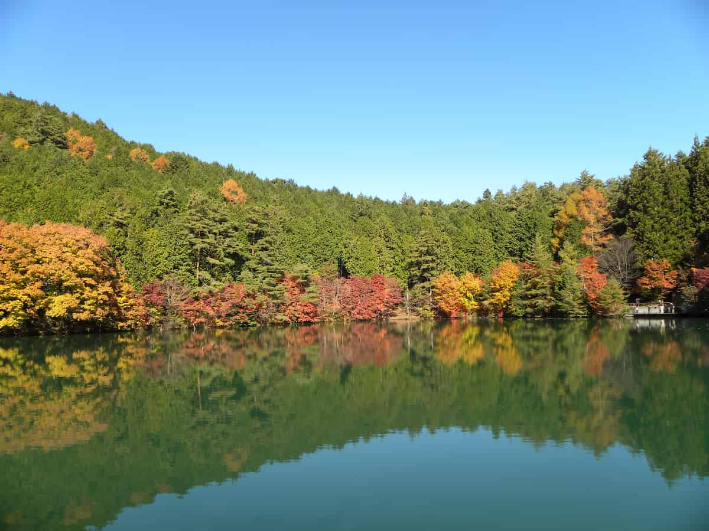
静かな湖面に紅葉が映り込み、まるで鏡のようでした。ときおり吹く風で水面が揺れ、色とりどりの紅葉がきらきらと光る幻想的な光景。周囲には撮影を楽しむ人も多く、つい夢中になってシャッターを切ってしまいました。季節を変えてまた訪れたいと思えるほど素敵な景色でした。
★南伊奈ヶ湖で撮影した写真★
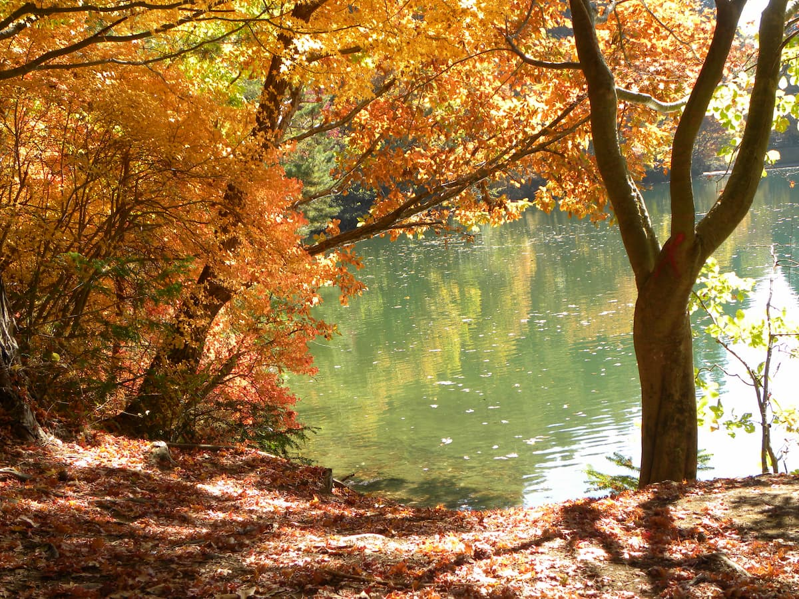
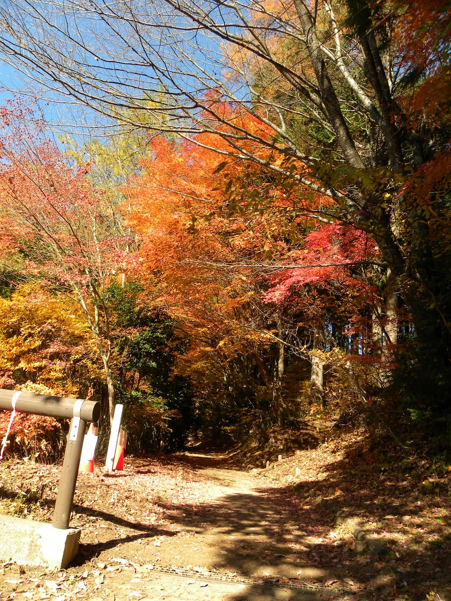
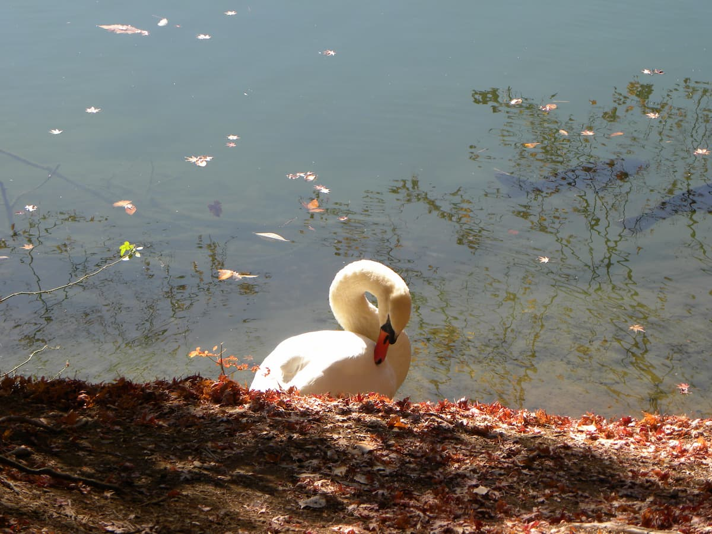
アクセス情報
- 所在地：山梨県南アルプス市上市之瀬
- アクセス：南アルプスICより15分
- 駐車場：有
- 観光時間：約1時間
- 公式サイトはこちらをクリック
☆高尾穂見神社☆
高尾穂見神社は御祭神として保食神（うけもちのかみ）を祀っている神社です。本殿および御正体である青銅鏡は山梨県指定文化財であり、古くから五穀豊穣や商売繁盛のご利益がある神社として知られています。
南伊奈ヶ湖の散策を終え、次に向かったのは、山道をさらに登った先にひっそりと佇む高尾穂見神社でした。
到着してまず感じたのは、人の気配がほとんどない静けさです。山奥にあるため、まさに「知る人ぞ知る」ような厳かな空気が漂っていました。
人が少ない分、最近話題になっている熊の出没を思い出してしまい、正直なところ少し怖さもありました。
そんな中、偶然にも神社の掃除に来ていた地元の方とお話しすることができました。お話によると、2日後(毎年11月22日から11月23日にかけて)に祭典が予定されていたとのことで、その瞬間だけこの静寂が一気に華やぐのだろうと想像し、「もう少し日程をしっかり組んでいれば…」と少し後悔してしまいました。

境内に入ると、まず目に入ったのは立派な拝殿。こちらで最初にお参りをさせていただきました。
その隣には巫女殿があり、ちょうど祭典の準備が進められているようでした。
御朱印をいただけるのは祭典の日のみということで、今年は日程が合わず残念ながらいただけませんでしたが、来年また訪れる楽しみができました。
★高尾穂見神社で撮影した写真★
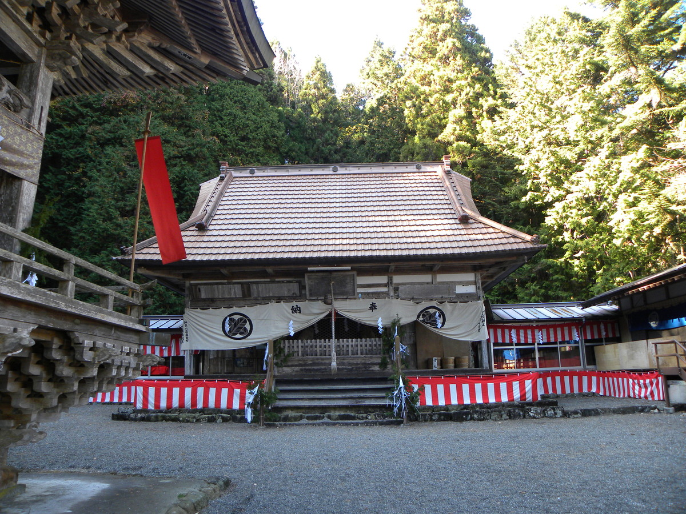
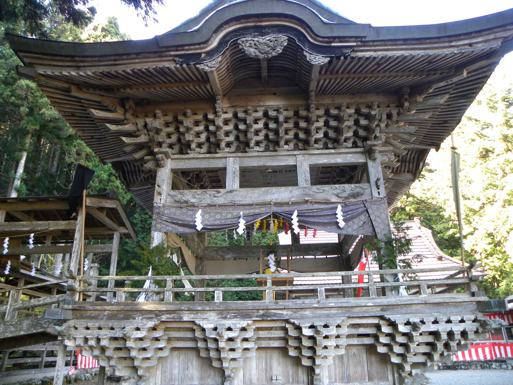
アクセス情報
- 所在地：南アルプス市高尾498
- アクセス：南アルプスICより20分
- 駐車場：有
- 観光時間：30分
☆身延山久遠寺☆
最後に訪れたのは、日蓮宗の総本山として知られる身延山久遠寺です。南伊奈ヶ湖や高尾穂見神社とはまた違った、静けさと荘厳さが漂う場所でした。
境内に入るとまず目に入ったのは、立派な本堂と広い境内。山深い場所にありながら参拝者も多く、長い歴史の中で多くの人に大切にされてきたことが伝わってきます。
本堂へ続く石段「菩提梯（ぼだいてい）」は287段。見上げるだけで圧倒されるほど急な階段ですが、一段ずつ登るたびに空気が澄んでいき、気持ちが静かに整っていくようでした。さすがに登りきる頃には息が上がりましたが、その先に広がる景色と空気は格別。まさに修行の地らしい厳しさと清らかさを感じる瞬間でした。
参拝後はロープウェイで山頂へ向かい、奥之院思親閣へ。山頂はさらに空気が澄んでいて、眼下には南アルプスや富士川の流れが広がる大パノラマ。思親閣は日蓮聖人がご両親を偲ばれた場所として知られ、静かに手を合わせると自然と背筋が伸びるような不思議な感覚に包まれました。
紅葉の季節ということもあり、境内の至るところが赤や黄色に染まり、荘厳な建物とのコントラストがとても美しかったです。日常の喧騒から離れ、心を落ち着けるには最高の場所でした。
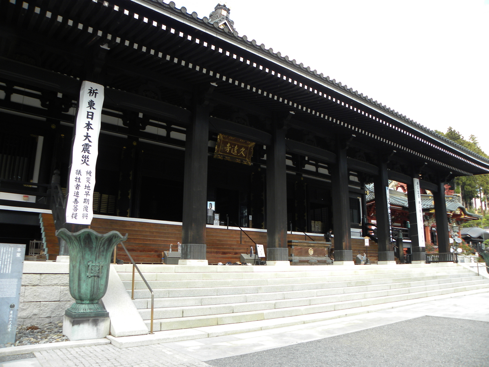
そして身延山といえば、葛飾北斎が久遠寺近くを流れる身延川を題材に描いた「身延川裏不二（みのぶがわ
うらふじ）」でも有名な場所です。高尾穂見神社を訪れたときは天候に恵まれていましたが、身延山へ向かう途中から雲行きが怪しくなり、残念ながら今回は「身延川裏不二」に描かれているような富士山を見ることはできませんでした…。
ただ、曇り空の中でも久遠寺の荘厳さは変わらず、むしろ静かな雰囲気が際立っていて、これはこれで趣のある参拝となりました。桜の季節にも美しいことで知られているので、来年こそは富士山が見える晴天の日を狙って、もう一度この絶景に挑みたいと思います!
★身延山久遠寺で撮影した写真★
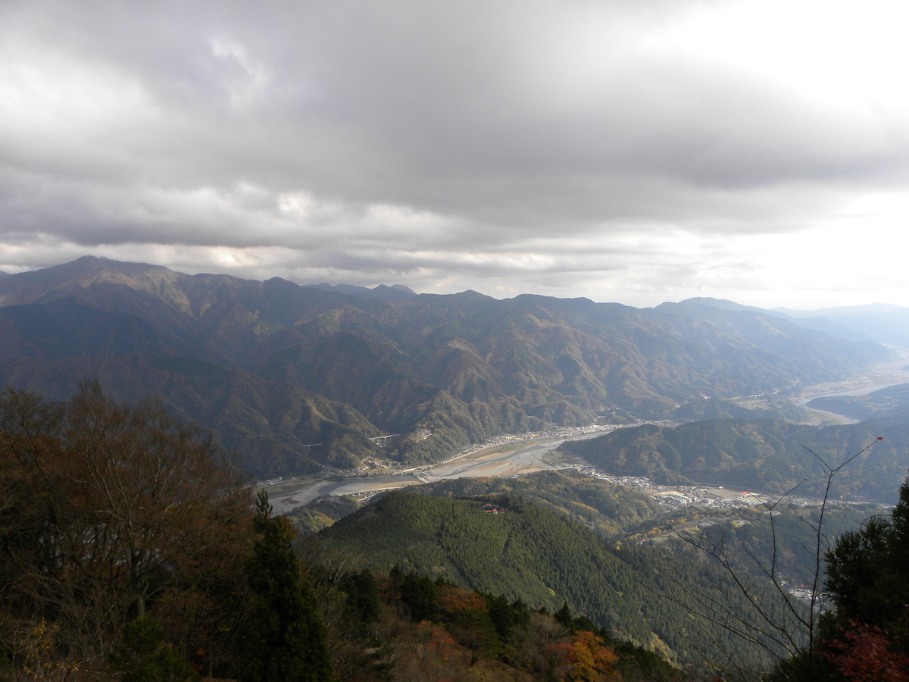
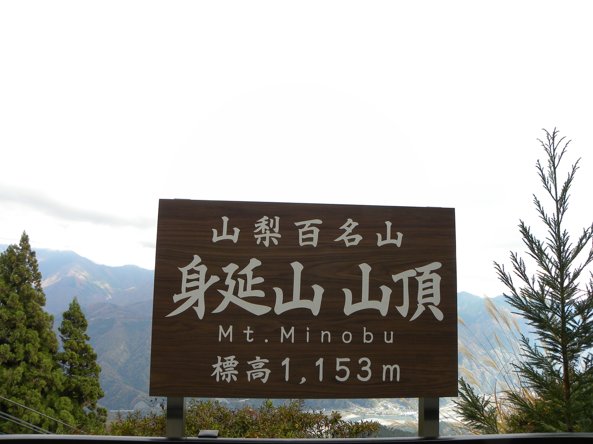
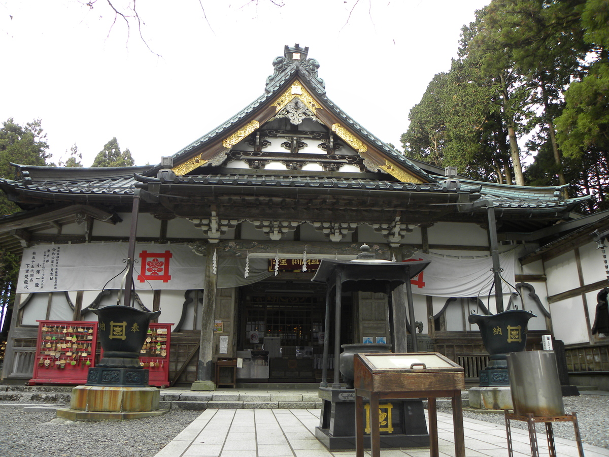
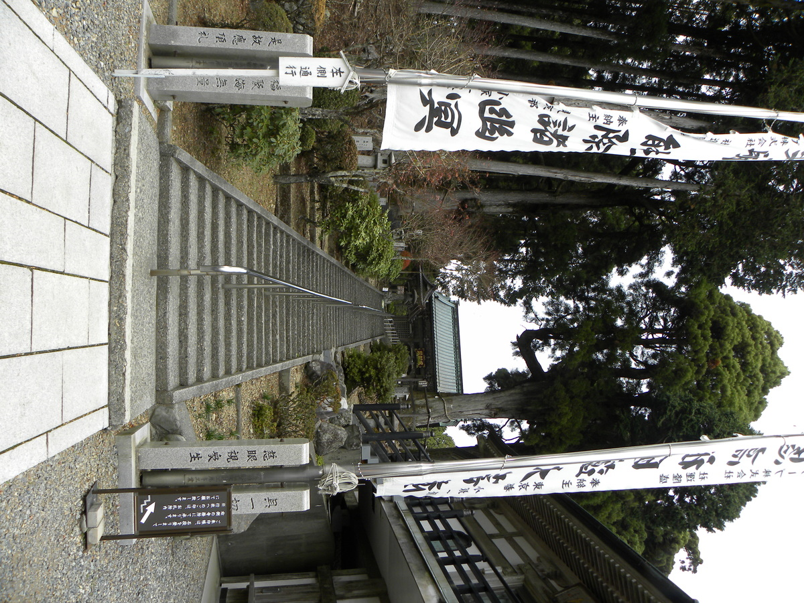
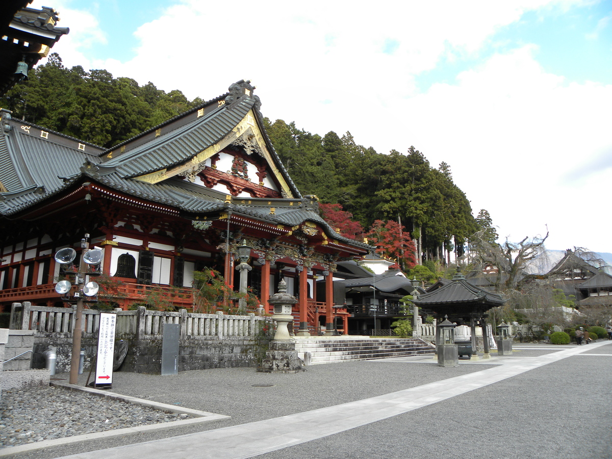
アクセス情報
- 所在地：身延町身延3567
- アクセス：下部温泉ICより20分
- 駐車場：有
- 観光時間:2時間
- 公式サイトはこちらをクリック
☆まとめ☆
今回は南伊奈ヶ湖、高尾穂見神社、そして身延山久遠寺と、秋の山梨をゆっくり巡る旅となりました。天候に恵まれた場所もあれば、曇り空で景色が隠れてしまった場所もありましたが、それぞれにしかない空気や景色に触れられ、とても思い出深い一日となりました。
次は桜の季節に、今回見ることができなかった富士山も含めて、また改めて訪れたいと思います。